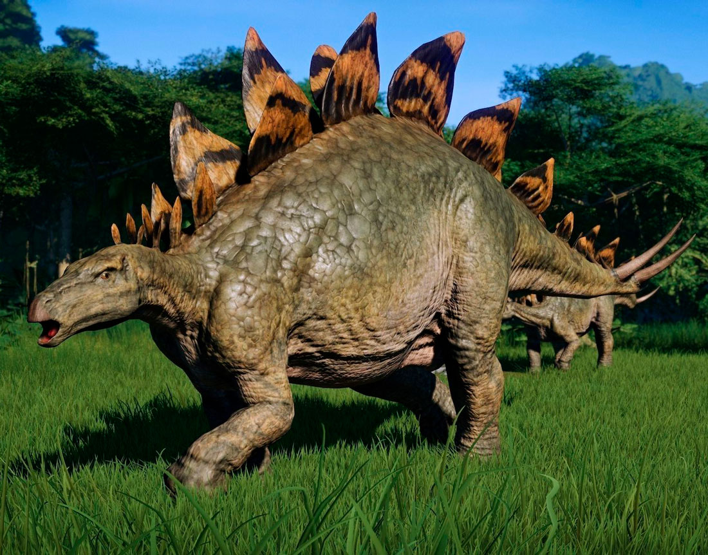

Рід травоїдних стегозавроподібних панцирних динозаврів пізньої Юри, що характеризувалися характерними пласкими кістковими пластинами вздовж хребта та шипами на хвості. Скам'янілості цього роду були знайдені на заході США і в Португалії, де вони зустрічаються в шарах від кімериджського до титонського віку, що датуються періодом від 155 до 145 млн років тому.
Більшість інформації, відомої про стегозаврів, було отримано зі скам'янілостей дорослих особин. Проте пізніше були знайдені й скелети молодих динозаврів.
Великий чотириногий травоїдний динозавр, стегозавр мав дуже незвичну статуру: важку аркоподібну спину, короткі передні кінцівки, голову що трималася близько до землі, і хвіст що тримався високо угорі. Велика кількість пластин та шипів довго була предметом для роздумів. Шипи, швидше за все, використовувалися для захисту, а пластини відігравали ще й терморегуляційну функцію (захист від перегрівання). Стегозавр був найбільшим зі стегозавроподібних (більшим за представників родів Kentrosauria та Huayangosauria), і, бувши розміром приблизно з автобус, все ж таки мав багато спільних анатомічних особливостей (таких як хвостові шипи та пластини) з іншими родами стегозаврів.
На передніх лапах було по п'ять пальців, на задніх — по чотири, і тільки два внутрішніх пальці закінчувалися копитами. На кожній лапі позаду пальців розташовувалась м'яка подушка. Передні лапи були значно коротші за задні, що спричиняло дивну поставу. Хвіст знаходився достатньо високо, в той час, як голова була розташована близько до землі, на відстані приблизно 1 метр.
